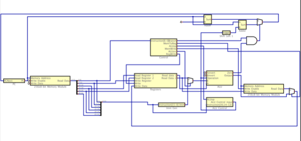
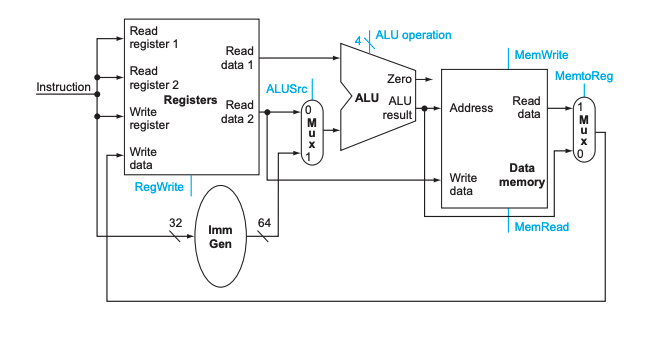

This is a semester long project I worked on during my ITSC 3181 course, Introduction to Computer Architecture. This course had a focus on understanding how low level programming languages like assembly and specifically RISC-V worked. A large segment of this class was designing a CPU to perform basic operations and thoeretically take code inputs to properly function.
I built the CPU using an virtual circuit builder and started from scratch building each component. To make the circuits more readable, I saved each smaller segment like the ALU, Arithmatic Logic Unit, as it's own circuit and imported it back into the main circuit. Each imported circuit is represented by a large yellow square on the diagram with a label. Due to website storage concerns, I will not be able to show each individual circuit.
Above you can see my design I made for my CPU. I modeled it off of a simple CPU that is pictured below.
